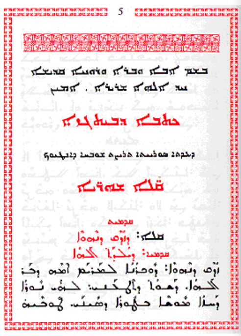

This page brings together basic information about the Estrangela form of the Syriac script and its use for the Classical dialects of the Syriac language, although the brief is a little vague and it also describes numerous diacritics that have been used for Syriac texts, and from time to time compares Estrangela with Eastern and Western forms of the orthography. It aims to provide a brief, descriptive summary of the orthography and typographic features, and to advise how to write Syriac using Unicode. For use of modern vernacular forms of Syriac, Eastern and Western, see the separate orthography descriptions for Assyrian Neo-Aramaic and Turoyo, respectively.
Select part of this sample text to show a list of characters, with links to more details.
Change size: 40px
Although this page is mainly about the Estrangela form of the Syriac script, we will provide here samples of the later Western and Eastern forms also, for comparison.
The Estrangela Syriac script is used to write Classical Syriac Aramaic, but it is not found much in modern times outside of liturgical use. It may however appear in titles or decorative text in modern content. In its history it has also been used for other dialects and languages. The modern languages Assyrian Neo-Aramaic and Turoyo use variant forms of the orthography which are described on separate pages.
We use the name 'Estrangela' here for the version of the orthography used for Classical Syriac, but Western Syriac refers to this as 'Estrangelo'.
ܐܠܦ ܒܝܬ ܣܘܪܝܝܐālep̄ bêṯ SūryāyāSyriac alphabet
Primarily used to write the Syriac language from the 1st century AD, Syriac is one of the Semitic abjads descending from the Aramaic alphabet through the Palmyrene alphabet, and it shares similarities with the Phoenician, Hebrew, Arabic and the traditional Mongolian scripts.
The Syriac language has two dialects, which are very similar, with almost no differences in grammar or vocabulary, but there are differences in pronunciation.
The script, however, has three main forms: maḏnḥāyā (ܡܲܕ݂ܢܚܵܝܵܐ) (eastern), ʾesṭrangēlā (ܐܣܛܪܢܓܠܐ), and serṭā (ܣܶܪܛܳܐ) (western).
All ancient manuscripts used Estrangela. West and East Syriac text uses it for headers, titles, and subtitles. It's also the current standard for Western scholarship.n,6
Serto is used in West Syriac texts, Turoyo, and Garshuni (Arabic written with Syriac).
Madnhaya is used for East Syriac and Swadaya (Aramaic) texts, and in West Syriac texts for headers, titles and subtitles.n,6
Garshuni (ܓܪܫܘܢܝ) texts are Arabic written in the Syriac script. When Arabic began to be the dominant spoken language in the Fertile Crescent after the Islamic conquest, texts were often written in Arabic using the Syriac script as knowledge of the Arabic alphabet was not yet widespread. It is currently used for writing Arabic liturgical texts amongst the Syriac-speaking Christians. A large corpus of manuscripts ranging from the 8th century till the modern day exists in Garshuni. Garshuni employs two additional letters and the Arabic set of vowels and combining marks.n,6
Syriac has also been used to write Persian, and Ottoman Turkish. In addition to Semitic languages, Sogdian was also written with Syriac script, as well as Malayalam, which form was called Suriyani Malayalam.
Syriac is an abjad. The script relies mostly on consonant sounds to write words, although in Modern Aramaic written in Syriac vowel sounds tend to be written using diacritics, making it more like an alphabetic script. See the table to the right for a brief overview of features for the Syriac Estrangela orthography as used for the Syriac language.
For use of modern vernacular forms of Syriac, see the separate orthography descriptions for Assyrian Neo-Aramaic and Turoyo.
Text runs from right to left in horizontal lines. If ASCII digits are used, the numbers run left to right within the right to left flow. Words in Syriac are separated by spaces.
Estrangela Syriac has a basic set of 21 consonant letters, 6 of which represent both a plosive (hard) and a fricative (soft) sound. This page describes 19 more that are used for extensions of the script for other languages, and 4 others that are of archaic, symbolic, or word-final use.
Although modern vernacular derivatives, such as those for Assyrian Neo-Aramaic and Turoyo, are usually fully pointed, Estrangela doesn't normally have vowel diacritics. Its origins go back to a time before such additions were common. It does, however, use 3 matres lectionis.
A significant feature of Syriac is its large number of diacritics, encoded both in the Syriac block and the Combining Diacritical Marks block (plus the Arabic block for Garshuni text). For the 17 vowel-related diacritics, see the vowel sections in the orthography descriptions for Assyrian Neo-Aramaic and Turoyo (eastern and western styles, respectively). This page lists 19 additional diacritics used to annotate and disambiguate the text. Garshuni uses 12 more diacritics to represent vowels.
Note on transliteration: The transliterated text here conforms mostly to that of the sources used, but takes a departure for the vowels in order to ensure a one-to-one correspondence between Syriac and Latin characters.
Character index
Letters
Show
Consonants
ܦ␣ܒ␣ܬ␣ܛ␣ܕ␣ܟ␣ܓ␣ܩ␣ܥ␣ܣ␣ܤ␣ܨ␣ܫ␣ܙ␣ܚ␣ܗ␣ܡ␣ܢ␣ܘ␣ܪ␣ܠ␣ܝ␣ܞ
Vowels
ܐ
Other
ـ
Not used
ܔ␣ܜ␣ܖ␣ܧ
Combining marks
Show݁␣݂␣̊␣̥␣݀␣̇␣̣␣݃␣݄␣̈␣̤␣݇␣݈␣̄␣̱␣̭␣݉␣݊␣̮
Vowels (not used)
ܼ␣ܸ␣ܹ␣ܿ␣ܲ␣ܵ␣ܺ␣ܻ␣ܽ␣ܾ␣ܶ␣ܷ␣ّ␣ܰ␣ܱ␣ܳ␣ܴ
Garshuni (not used)
ّ␣ً␣ٌ␣ٍ␣َ␣ُ␣ِ␣ْ␣ٓ␣ٔ␣ٕ␣ٰ
Other not used
ܑ␣݅␣݆
Punctuation
Show،␣؛␣.␣؟␣܀␣܁␣܂␣܃␣܄␣܅␣܆␣܇␣܈␣܉␣܊␣܋␣܌␣܍
ASCII
(␣)
Symbols
Show♰␣♱
Other
Show␣␣␣␣␣␣␣␣␣␣␣
Items to show in lists
Phonology
These are sounds for the Syriac language. There are several dialects, each of which have slight phonetic differences. For more detail, see Wikipedia.
Click on the sounds to reveal locations in this document where they are mentioned.
Phones in a lighter colour are non-native or allophones. Source Wikipedia.
Vowel sounds
Plain vowels.
Diphthongs
Consonant sounds
labial
dental
alveolar
post-
alveolar
palatal
velar
uvular
pharyngeal
glottal
stops & affricates
pb
td
kɡ
q
ʔ
ejective
tˤ
fricatives
fv
θð
sz
ʃ
xɣ
ħʕ
h
ejective
sˤ
nasals
m
n
approximants, trills, flaps
w
lr
j
Among most Assyrian Neo-Aramaic speakers, the pharyngeal ʕ is pronounced as ʔ or ∅, or geminates a previous consonant.
Show notes on dialectal variations, taken directly from Wikipedia:
In Iraqi Koine Assyrian and many Urmian & Northern dialects, the palatals c, ɟ and aspirate cʰ are considered the predominate realisation of k, g and aspirate kʰ.
The phoneme ħ is only used by Assyrian-speakers under larger Arabic influence. In most dialects, it is realised as x. The one exception to this is the dialect of Hértevin, which merged the two historical phonemes into ħ, thus lacking x instead.
The pharyngeal ʕ, represented by the letter `e, is a marginal phoneme that is generally upheld in formal or religious speech. Among the majority of Assyrian speakers, `e would be realised as aɪ̯, eɪ̯, ɛ, j, deleted, or even geminating the previous consonant, depending on the dialect and phonological context.
f is a phoneme heard in the Tyari, Barwari and Chaldean dialects. In most of the other Assyrian varieties, it merges with p. though f is found in loanwords for these varieties of Assyrian.
The phonemes t and d have allophonic realisations of θ and ð (respectively) in most Lower Tyari, Barwari and Chaldean dialects, which is a carryover of begadkefat from the Ancient Aramaic period.
In the Upper Tyari dialects, θ is realised as ʃ or t; in the Marga dialect, the t may at times be replaced with s.
In the Urmian dialect, w has a widespread allophone ʋ (it may vacillate to v for some speakers).
In the Jilu dialect, q is uttered as a tense k. This can also occur in other dialects.
ɡ is affricated, thus pronounced as d͡ʒ in some Urmian, Tyari and Nochiya dialects. k would be affricated to t͡ʃ in the same process.
ɣ is a marginal phoneme that occurs across all dialects. Either a result of the historic splitting of g, through loanwords, or by contact of x with a voiced consonant.
ʒ is found predominately from loanwords, but, in some dialects, also from the voicing of ʃ (e.g. (ḥašbunā)xaʒbu:na:, counting, from the root ḥ-š-b, to count) as in the Jilu dialect or the fortition of j (e.g. Urmiynāyā > UrmižnāyāUɾ:mɪ:ʒna:ja:, Urmian from mijawater)
n can be pronounced ŋ before velar consonants x and q and as m before labial consonants.
Tone
Syriac is not a tonal language.
Structure
tbd
Vowels
Vowel summary table
The following table summarises the main vowel to character assigments.
The table shows only visible vowel components in unvocalised text. The hyphens (read RTL) indicate the position within a word.
Here is the set of characters described in this section, grouped by general category.
ܐ␣ܘ␣ܝ
Post-consonant vowels
Vowel handling in classical Syriac is very simple. There are no dedicated vowel letters. Instead, the 5 basic vowel sounds are written using 3 consonants employed as matres lectionis.
Plain vowels
Three consonants can also represent vowels, and are known as matres lectionis. They are ܐ, ܘ and ܝ. For details, click on the glyphs in the list below.
ܝ␣ܘ␣ܐ
Diphthongs
The same letters are used to represent the diphthongs, as shown in the panel below.
ܝ␣ܘ
Standalone vowels
Standalone vowels at the beginning of a word, or word internally are generally all represented by ܐ, however that may or may not indicate a vowel following a glottal stop. In word-initial position, Wiktionary transcriptions seem to consistently indicate that ALAPH represents a glottal stop, but not so in other locations.
ܐܒܓܕ
ܐܝܣܪܐܝܠ
Vowel sounds to characters
This section maps Syriac vowel sounds to common graphemes in the Estrangela orthography. Click on a grapheme to find other mentions on this page (links appear at the bottom of the page). Click on the character name to see examples and for detailed descriptions of the character(s) shown.
Only sounds for which matres lectionis exist are described.
Plain vowels
i
ܝ
ܪܝܪܐ
u
ܘ
ܫܘܫܢܬܐ
e
ܝ
ܩܛܝܪܩܐ
o
ܘ
ܚܘܚܐ
ɑ
ܐ
ܐܙܠܐ
Diphthongs and other combinations
aj
ܝ
ܓܘܓܝ
aw
ܘ
ܬܘܬܪܐ
Consonants
Consonant summary table
The following table summarises the main consonant to character assigments.
The right column shows the use of diacritics to disambiguate various sounds.
All the letters in the Syriac block are consonants. There are 22 basic consonant letters, but several may represent more than one consonant sound.
ܦ␣ܒ␣ܬ␣ܛ␣ܕ␣ܟ␣ܓ␣ܩ␣ܥ␣ܣ␣ܤ␣ܨ␣ܫ␣ܙ␣ܚ␣ܗ␣ܡ␣ܢ␣ܘ␣ܪ␣ܠ␣ܝ
ܣ has a separate code point for its final form, ܤ, like Greek sigma or several letters in the Hebrew block.
Hard and soft sounds
݂␣݁␣̮◌݂␣◌݁␣◌̮
The following consonant symbols represent two sounds, one 'hard' and one 'soft'. The hard sound is an unaspirated plosive, the soft sound is an aspirated fricative or w.
ܦ␣ܒ␣ܬ␣ܕ␣ܟ␣ܓ
The intended sound of the letter can be made explicit using diacritics, however they are optional (and none of the Wiktionary lemmas used here as examples employ them).
Hard form. A high dot indicates the hard form. The code point to use is 0741.
ܦ݁␣ܒ݁␣ܬ݁␣ܕ݁␣ܟ݁␣ܓ݁
ܦ݁ܐpē
Soft form. A low dot indicates the soft form. The code point to use is 0742.
ܦ݂␣ܒ݂␣ܬ݂␣ܕ݂␣ܟ݂␣ܓ݂
ܐܠܦ݂ʾālap̄
An East Syriac addition. Late and modern East Syriac texts use 032E to indicate a fricative form of pē,w ie. ܦ̮
Alternative glyphs. Danielsd reports that the dots can also be written as small circles, and mixed freely with the above dot diacritics in West Syriac grammar books to indicate the hard/soft pronunciation of plosive letters.
These can be represented by the Unicode code points 030A and 0325.
Repertoire extensions
Eastern Syriac additions
Eastern Syriac uses a couple of additional symbols, though they don't introduce new sounds:
ܞ␣ܧ
ܞ is an abbreviation for "God" used in some ceremonial contexts but not ordinary text. It used as a symbol, with no pronunciation.
ܧ is used in Christian Palestinian Aramaic.
Garshuni
Garshuni (ܓܪܫܘܢܝ) refers to the practise of writing Arabic in the syriac script. In addition to Arabic script diacritics, a couple of Syriac letter forms are used.
ܔ␣ܜ␣ً␣ٌ␣ٍ␣َ␣ُ␣ِ␣ّ␣ْ␣ٰ␣ٕ␣ٔ␣ٓ␣̈
To represent teh marbuta, Syriac uses 0308. Vowel sounds are written using the Arabic harakat marks.
Dalath Rish
ܖ
ܖ is an alternative shape that can be used to represent an ambiguous, dotless letter in ancient texts that would be represented in more recent texts by one of ܕ or ܪ.
ܥܖܒܝܐ
Additional consonants
Several additional consonants are used for writing other languages in Syriac: 3 for Persian
Isolated versions of 3 letters, such as may be found in counter styles, are usually presented as a doubled letter, using intial and final forms, ie.
ܟܟkܡܡmܢܢn
Comparison of shapes
The glyphs used to represent consonants in Estrangelo, Eastern, and Western Syriac can be significantly different. The following list compares them, top to bottom, in that order.
ܦܦܦppp, p̄
ܒܒܒbbb ḇ
ܬܬܬttt ṯ
ܕܕܕddd ḏ
ܛܛܛtˤtˤṭ
ܟܟܟkkk ḵ č
ܓܓܓɡgg ḡ ǧ
ܩܩܩqqq
ܐܐܐʔʾʾ ȃ
ܣܣܣsss
ܙܙܙzzz ž
ܨܨܨsˤsˤṣ
ܫܫܫʃʃš ẑ
ܚܚܚħħḥ
ܥܥܥʕʿʿ
ܗܗܗhhh
ܡܡܡmmm
ܢܢܢnnn
ܘܘܘwww û ô
ܪܪܪrrr
ܠܠܠlll
ܝܝܝjyy î
ܖܖܖdḋd ḏ
ܞܞܞjʰjʰjh
ܤܤܤ-sṡs
ܧܧܧpṗp
Baseline elongation
ـ
Syriac uses the Arabic character ـ to lengthen the baseline.
Silent letters (talqana)
0747 is used in the Eastern style to indicate letters that are not pronounced. It is frequently used in the modern Aramaic koine to bridge difference in dialects. For example, the following is pronounced baθar in some modern dialects, harking back to the classical pronunciation, but bar in Urmi and the koine.
ܒܬ݇ܪbt݇rafter
The letters ܐ, ܥ, ܗ, and ܝ, when included for etymological reasons, are often silent, though without using the talqana.n
The Unicode Standard says that 0748 is used in a similar way.u
The Western style uses 0331, eg. the above example would be written
ܒܬ̱ܪbṯr
0711 is used in East Syriac texts to indicate an etymological alaph, eg. ܩܲܖ݄ܡܵܝܑܼܬ̣qaḋ‒݄māyˈit‒̜ It maps to nothing in West Syriac.
Onsets
Consonant clusters in syllable onsets are simply written using a sequence of consonant letters.
Finals
No special mechanisms are used to write syllable or word final consonants.
Consonant clusters
There is no equivalent to the Arabic sukun to indicate clusters of consonant sounds. (Although the Arabic character can be used when transliterating Arabic text in Syriac script.)
However, the short a and ɪ vowels are only used in closed syllables, so if they are followed by an intervocalic consonant, it indicates that the consonant is doubled,d eg. compare ܣܲܡܵܐsămaʾsammapoisonܣܵܡܵܐsamaʾsaːmaportion
Consonant sounds to characters
This section maps Syriac consonant sounds to common graphemes in the Estrangela orthography. Click on a grapheme to find other mentions on this page (links appear at the bottom of the page). Click on the character name to see examples and for detailed descriptions of the character(s) shown.
Sounds listed as 'infrequent' are allophones, or sounds used for foreign words, Sanskrit, etc.
p
ܦ
ܦܕܢܐ
072607260726 ⏴
b
ܒ
ܒܓܐ
071207120712 ⏴
t
ܬ
ܬܘܬܪܐ
072C072C ⏴
tˤ
ܛ
ܛܒܐ
071B071B071B ⏴
d
ܕ
ܕܪܕܐ
ܖ Ambiguous form used before the 4th century (also represents the sound r).
071507150715 ⏴
k
ܟ
ܟܟܐ
071F071F071F ⏴
ɡ
ܓ
ܓܡܠܐ
071307130713 ⏴
q
ܩ
ܩܛܝܪܩܐ
072907290729 ⏴
ʔ
ܐ
ܐܒܓܕ
071007100710 ⏴
f
ܦ
ܫܘܦܢܝܢܐ
ܦ݂ The dot indicates that this is the soft sound.
072607260726 ⏴
v
ܒ
ܐܒܘܒܐ
ܒ݂ The dot indicates that this is the soft sound.
071207120712 ⏴
θ
ܬ
ܐܬܘܬܐ
ܬ݂ The dot indicates that this is the soft sound.
072C072C072C ⏴
ð
ܕ
ܡܕܪܐ
ܕ݂ The dot indicates that this is the soft sound.
071507150715 ⏴
s
ܣ
ܣܣܐ
ܤ (optionally) in word-final position.
072307230723 ⏴
z
ܙ
ܙܘܙܐ
071907190719 ⏴
sˤ
ܨ
ܨܪܨܘܪܐ
072807280728 ⏴
ʃ
ܫ
ܫܘܫܢܬܐ
072B072B072B ⏴
x
ܟ
ܟܟܘܫܬܐ
ܟ݂ The dot indicates that this is the soft sound.
071F071F071F ⏴
ɣ
ܓ
ܒܓܐ
ܓ݂ The dot indicates that this is the soft sound.
071307130713 ⏴
ħ
ܚ
ܚܘܚܐ
071A071A071A ⏴
ʕ
ܥ
ܥܛܪܐ
072507250725 ⏴
h
ܗ
ܗܪܗܪܐ
071707170717 ⏴
m
ܡ
ܡܐܡܪܐ
072107210721 ⏴
n
ܢ
ܢܘܢܐ
072207220722 ⏴
w
ܘ
ܘܙܐ
071807180718 ⏴
r
ܪ
ܪܝܪܐ
ܖ Ambiguous form used before the 4th century (also represents the sound d).
072A072A072A ⏴
l
ܠ
ܠܠܝܐ
072007200720 ⏴
j
ܝ
ܝܒܝܫܘܬܐ
071D071D071D ⏴
Symbols
♰␣♱
These characters are ♰ and ♱.
Other features
More diacritics
The list below shows all the additional diacritics: click on the letter to see detailed description; click on the arrow to find an in-context description that groups together similar diacritics.
These diacritics are used in unpointed as well as pointed text.
Plurals (syame)
0308 is used to represent the Syriac syame (ܣܝ̈ܡܐ), which indicates plural nouns, adjectives and participles. It is needed because many plural words would otherwise look the same as the singular word, eg. the following could be read as either malkāking or as malkēkings.
ܡܠܟܐmlkʾmalkāking
Instead, the plural form can be written
ܡܠܟ̈ܐmlk̋ʾmalkēkings
Although it's not strictly needed for non-regular words, it is also used for them, eg. ܒܝܬܐbytʾ(baytā)houseܒ̈ܬܐb̋tʾ(bāttē)houses
Some modern usage, however, omits this diacritic when vowel marks are present, because it is redundant.
An author can place this mark above any letter in a word, but if the word contains one or more of ܪ the mark is generally placed over the one which is nearest the word end, and replaces the single dot above it, eg. ܢܘܟ݂ܪ̈ܝܐnwk‒̣r‒̈yʾnuxrajɪmodern
Other likely locations include low rising letters, and letters near the middle or end of a word.w
Disambiguation marks
Diacritics can be used to disambiguate the pronunciation of otherwise identical-looking words. For example:
0307 and 0323 are used to disambiguate certain letters, morphemes or words, eg. compare
ܡ̇ܢṁnmanwhoܡ̣ܢṃnmɪnfrom
The dot is also written over the 3rd person feminine suffix.
ܘܗ̇-wḣ-o
And the masculine and feminine personal pronouns and their corresponding demonstratives.
̇ܘḣwawܗ̇ܝḣyaj
Feminine marker
0740 is a feminine marker used with ܬ to indicate a feminine suffix. East Syriac fonts should render as two dots below the base letter, whereas West Syriac fonts render as a single dot to the left of the base, eg. compare in the Eastern (top) and Western (bottom) orthographies in fig_feminine (click on the images to see the underlying code points):
The same word in Eastern (left) and Western (right) script styles, showing the different appearance of the feminine marker in each (coloured here, after or below the last character.)
Other diacritics
0743 and 0744 are accent marks.
Found in ancient manuscripts, 0324 has a grammatical and phonological function.
0304 and 0331 are used for various purposes, ranging from phonological to grammatical and orthographic markers.d Nelson et al. describe the following uses for the lower line: "the sublinear line can be used to: 1) indicate that the letter under which it lies is not to be pronounced, 2) disambiguate between the passive imperative verb from the passive past since they are homographs, and 3) to indicate that the letter under which it lies is to be pronounced with a shewa".n,8
032D is used as a digit marker.u
0749 is associated with music, and 074A is a diacritic cross.
Diacritics for Assyrian/Turoyo
̃␣̰␣ܑ␣݅␣݆
Combining tildes are used in modern Syriac styles to modify the sound of a consonant, eg. to represent sounds not found in non-classical Syriac.
These marks are called ܡܓ̰ܠܝܢܐmaǧlīyānā, and they are combined with a base consonant to represent non-classical sounds in modern dialects or to change the sound for foreign words. It is applied to 4 consonants in Assyrian Neo-Aramaic, and 2 in Turoyo.
The maǧliyana is written using one of 2 code points from the Combining Diacritic Marks block: 0303 or 0330.
The superscript alaph indicates etymological information (see novowel), but is only used in the East Syriac style.
0745 and 0746 are used in Turoyo for letters not found in Classical Syriac, eg. ܐ݅ ܦܪܥܓܬܐܔ݆ܰܥܓܰܗ̈
Numbers
Modern Syriac uses Western digits, like Hebrew.n,11
There is also, however, a letter-based number system. Wikipedia hints at the use of diacritics to create higher numbers (using various systems of dashes above or below, [bet] can stand for 2,000 and 20,000wb,#Syriac_Beth).
Nelson et al. go further with the following: "When letters are used to designate numbers, a circumflex under the letter Alaph represents the numerical value 10,000,000 according to Oddo (1897), but 100,000 according to Costaz (1955); Payne Smith’s monumental lexicon assigns the value 10,000,000 to an Alaph with two dots under it!".n,8
Syriac script is written horizontally, right-to-left. Like other RTL scripts, such as Arabic and Hebrew, modern numbers and text in LTR scripts are displayed left-to-right (producing 'bidirectional' text).
Bidirectional Syriac text. Numbers and Latin text (highlighted) are read left-to-right, and the rest of the text flows right-to-left.
The Unicode Bidirectional Algorithm automatically takes care of the ordering for all the text in fig_bidi_text, as long as the 'base direction' is set to RTL. In HTML this can be set using the dir attribute, or in plain text using formatting controls.
If the base direction is not set appropriately, the directional runs will be ordered incorrectly as in fig_bidi_no_base_direction.
The exact same sequence of characters with the base direction set to RTL (top), and with no base direction set on this LTR page (bottom).
Unicode provides a set of 10 formatting characters that can be used to control the direction of text when displayed. These characters have no visual form in the rendered text, however text editing applications may have a way to show their location.
202B (RLE), 202A (LRE), and 202C (PDF) are in widespread use to set the base direction of a range of characters. RLE/LRE comes at the start, and PDF at the end of a range of characters for which the base direction is to be set.
In Unicode 6.1, the Unicode Standard added a set of characters which do the same thing but also isolate the content from surrounding characters, in order to avoid spillover effects. They are 2067 (RLI), 2066 (LRI), and 2066 (PDI). The Unicode Standard recommends that these be used instead.
There is also 2068 (FSI), used initially to set the base direction according to the first recognised strongly-directional character.
061C (ALM) is used to produce correct sequencing of numeric data. Follow the link and see expressions for details.
200F (RLM) and 200E (LRM) are invisible characters with strong directional properties that are also sometimes used to produce the correct ordering of text.
A sequence of European numbers, for example a range separated by hyphens, runs from right to left in the Syriac script (and Arabic or Thaana scripts), whereas for Persian, Hebrew, N’Ko or Adlam scripts it runs left to right.
fig_range shows some Syriac text, which is right-to-left overall, containing a numeric range that is ordered RTL, ie. it starts with 240 and ends with 250.
A numeric range in Syriac language text.
The Unicode Bidirectional Algorithm automatically produces the expected ordering when a sequence or expression follows Syriac characters. However, a sequence that appears alone on a line doesn't benefit from this, so to make the text appear correctly for Syriac you should add 061C (ALM) at the start of the line (see fig_alm). This is an invisible formatting character.
A numeric date alone on a line of RTL text, with ALM before it (top), and without (bottom). (Click on each line to see the code points.)
Similar special ordering is applied to numbers in equations, such as 1 + 2 = 3, for Syriac language text.
For additional details on how direction of ranges interacts with surrounding characters and separators used, see the section Expressions & sequences in the Modern Standard Arabic orthography description.
There are 3 main writing styles: maḏnḥāyā (ܡܲܕ݂ܢܚܵܝܵܐ) (eastern), ʾesṭrangēlā (ܐܣܛܪܢܓܠܐ), and serṭā (ܣܶܪܛܳܐ) (western).
All ancient manuscripts used Estrangelo. West and East Syriac text uses it for headers, titles, and subtitles. It's also the current standard for Western scholarship.n,6
Serto is used in West Syriac texts, Turoyo, and Garshuni (Arabic written with Syriac).
Madnhaya is used for East Syriac and Swadaya (Aramaic) texts, and in West Syriac texts for headers, titles and subtitles.n,6
The phonetic repertoire is largely the same, as are the code points for the consonant letters, but the shapes of the letters and code points and shapes of vowel diacritics can vary significantly. fig_writing_styles shows the differences using typical fonts for each style.
The opening words of the Gospel of St John in (top to bottom) Estrangelo, Eastern Syriac and Western Syriac. Source w,#Alphabet_forms
fig_writing_styles_noto shows the same text, but this time using Noto fonts, which tend to show up better the essential differences in the shapes of the letters (since the font design is harmonised), at the cost of neutralising much of the distinctive flavour that each of these writing styles carry.
ܒܪܫܝܬ ܐܝܬܘܗܝ ܗܘܐ ܡܠܬܐ.
ܒ݁ܪܹܫܝܼܬ݂ ܐܝܼܬ݂ܵܘܗ݇ܝ ܗ݇ܘܵܐ ܡܸܠܬ݂ܵܐ.
ܒ݁ܪܶܫܺܝܬ݂ ܐܻܝܬ݂ܰܘܗ̠ܝ ܗ̠ܘܳܐ ܡܶܠܬ݂ܳܐ.
The opening words of the Gospel of St John in (top to bottom) Estrangelo, Eastern Syriac and Western Syriac, using Noto fonts. Source Wikipedia
See the list of letter shapes compared side-by-side for Estrangelo, Eastern Syriac and Western Syriac.
Another difference between the 3 writing styles is that Estrangelo is rarely pointed, whereas modern texts in Turoyo or Assyrian are typically fully-vowelled (to the point that they can be regarded as alphabetic, rather than abjads).
Font styles different from the main text are often used for headings.
An East Syriac text with Estrangelo styles in the headings.n,40

A West Syriac text with Estrangelo and East Syriac styles in the headings.n,37
Cursive text
Syriac is cursive, ie. letters in a word are joined up. Fonts need to produce the appropriate joining form for a code point, according to its visual context, but the code point used for a given letter doesn't change.
ܦܘܠܝܛܝܩܝܬܐ
Letters join on the right or both sides in Syriac.
Seven letter shapes join only to the right. All other shapes join on both sides.
Cursive joining forms
The cursive treatment produces only minor changes to glyph shapes in most cases. A small number of letters, however, exhibit noteworthy changes, especially in word final positions. fig_joining_forms and fig_right_joining_forms show all the basic shapes in Assyrian and what their joining forms look like. Noteworthy variations are highlighted.
isolated
right-joined
dual-join
left-joined
Syraic letters
ܒ
ـܒ
ـܒـ
ܒـ
ܒ
ܦ
ـܦ
ـܦـ
ܦـ
ܦ
ܣ
ـܣ
ـܣـ
ܣـ
ܣ␣ܤ
ܩ
ـܩ
ـܩـ
ܩـ
ܩ
ܡ
ـܡ
ـܡـ
ܡـ
ܡ
ܫ
ـܫ
ـܫـ
ܫـ
ܫ
ܛ
ـܛ
ـܛـ
ܛـ
ܛ
ܠ
ـܠ
ـܠـ
ܠـ
ܠ
ܟ
ـܟ
ـܟـ
ܟـ
ܟ
ܚ
ـܚ
ـܚـ
ܚـ
ܚ
ܝ
ـܝ
ـܝـ
ܝـ
ܝ
ܓ
ـܓ
ـܓـ
ܓـ
ܓ
ܥ
ـܥ
ـܥـ
ܥـ
ܥ
ܢ
ـܢ
ـܢـ
ܢـ
ܢ
Joining forms for shapes that join on both sides.
isolated
right-joined
Syriac letters
ܐ
ـܐ
ܐ
ܬ
ـܬ
ܬ
ܙ
ـܙ
ܙ
ܨ
ـܨ
ܨ
ܘ
ـܘ
ܘ
ܗ
ـܗ
ܗ
ܕ
ـܕ
ܕ␣ܪ
Joining forms for shapes that join on the right only.
In modern Syriac ܣ joins on both sides, but in the earliest Estrangelo texts it only joined to the right.
Managing glyph shaping
200D (ZWJ) and 200C (ZWNJ) are used to control the joining behaviour of cursive glyphs. They are particularly useful in educational contexts, but also have real world applications.
ZWJ permits a letter to form a cursive connection without a visible neighbour.
ZWNJ prevents two adjacent letters forming a cursive connection with each other when rendered.
fig_joiners shows an example of a transcription of a manuscript.
Examples of ZWJ in use to create joining forms around and inside the brackets.
Context-based shaping & positioning
Context-based shaping
See just above for shaping related to cursive joining.
Ligatures. Apart from the shaping required to support cursive behaviour, there are also optional and font-dependent word-final ligatures.
The vowel diacritics have been omitted from the examples below, but their presence doesn't affect the ligation process.
fig_serto_lig shows a selection of ligated forms for the Serto writing style.
alaph + lamadh
ܐܠܗܐ
gamal + lamadh
ܓܠܦ
gamal + e
ܐܓܥܠ
yudh + taw
ܘܕܠـܝܠܐܝܬ
lamadh + space + alaph
ܕܬܬܠ ܐܢܬܬܐ
lamadh + alaph
ܡܠܐܟ݂ܗ
lamadh + lamadh
ܚܠܠܝܢܝ
nun + alaph
ܐ̱ܢܐ
nun + alaph
ܥܠ ܐܘܟܝܣܛܝܐ
sadhe + nun
ܕܘܨܢ
Ligatures in West Syriac style orthography.
fig_east_lig shows a similar list for the East Syriac writing style.
he + yudh
ܐܠܗܝ
taw + alaph
ܬܫܟܘܚܬܐ
taw + yudh
ܟܚܬܝ
dalath + final alaph
ܨܕܐ
Ligatures in East Syriac style orthography.
One ligated pair, representing jʰ, has its own code point: ܞ.
Context-based positioning
There are sometimes clashes between diacritic marks which have to be resolved by repositioning one of the diacritics, or sometimes producing a different solution.
For example, marks are usually centred vertically over or under a base character. If, however, 0742 appears below ܕ when the glyph for that has a dot below, the mark is moved slightly to the right, as shown here.
ܕ݂
Rukkakha moves to the right to accommodate the dot under dalath.
If 0308 appears above ܪ the mark replaces the single dot above the base letter.
ܪ̈
Combining diaeresis replaces the dot over rish.
In this example, the RISH character carries not only a combining diaeresis, but also a vowel mark, which is moved upwards to ride above the former.
ܪ̈ܵ vs ܝܵ
Rish + diaeresis + vowel mark causes stacking diacritics.
Typographic units
Word boundaries
Syriac uses spaces between words.
There are no one-letter words. One letter conjunctions and prepositions such as ܘw are continguous with the word they precede.
Graphemes
Grapheme clusters
tbd
Punctuation & inline features
Phrase & section boundaries
،␣؛␣܆␣܇␣.␣؟
Modern Syriac uses ASCII punctuation and punctuation borrowed from Arabic. For separators at the sentence level and below, the following are used.
Observation: Articles in Syriac Wikipedia tend to show ܀ at the end of each paragraph.
Bracketed text
(␣)
Syriac commonly uses ASCII parentheses to insert parenthetical information into text.
start
end
standard
(
)
Mirrored characters
The words 'left' and 'right' in the Unicode names for parentheses, brackets, and other paired characters should be ignored. LEFT should be read as if it said START, and RIGHT as END. The direction in which the glyphs point will be automatically determined according to the base direction of the text.
ܒ > ܓ" data-notes="Noto Sans Syriac Western 48px">
Both of these lines use >U+003E GREATER-THAN SIGN, but the direction it faces depends on the base direction at the point of display.
The number of characters that are mirrored in this way is around 550, most of which are mathematical symbols. Some are single characters, rather than pairs. The following are some of the more common ones.
(␣)␣<␣>␣[␣]␣{␣}␣«␣»␣‹␣›
Abbreviation, ellipsis & repetition
␣܊
Syriac abbreviation mark
070F (SAM) is a formatting character which is used to indicate that a sequence of letters is an abbreviation, as shown in fig_sam_abbrev.
An abbreviation of the word ܬܫܒܘܚܬܐ using the Syriac abbreviation marker.
The line would ideally have a small circle at the start, middle and end, but it has become common for computers to apply just the line, without the dots. With dots, however, is preferable for liturgical texts.n,9
The line normally starts to the left of the nearest tall letter and runs to the end of the abbreviation. To apply this using Unicode, add the SAM formatting control immediately before the character where the line begins. The application should then continue the line automatically to the end of the word.
The sequence of characters used (top to bottom) for the abbreviation in fig_sam_abbrev.
Eastern Syriac abbreviation
In Modern East Syriac texts a punctuation mark is placed at the end of an incomplete word to mark a contractionn,10n,44, eg.
ܩܫ܊qʃ.
Inline notes & annotations
܌␣܋␣܍
܍ or ܋ marks the beginning of a phrase, word, or morpheme that has a marginal note in the Herklean translation of the New Testament. The section is ended using ܌n,44.
For example:
܍ܥܙܢܐ܌܍ʿznʾ܌
Other inline features
Numbers
The Syriac abbreviation mark is used in older texts to identify letters used as numbers by drawing a line above them. See numbers for more information.
032D is also used as a digit marker.u
Other punctuation
The Syriac block includes a range of punctuation, which are not much used in modern, non-liturgical contexts, whose usage ranges from punctuating texts to guiding the reading of biblical texts in terms of accents, tone, etc.n,44
܀␣܁␣܂␣܃␣܄␣܅␣܆␣܇␣܈␣܉Example of estrangelo script as used by Western scholarsn, which includes some additional punctuation.
Line & paragraph layout
Line breaking & hyphenation
Basic line-break opportunities occur between the space-separated words.
They are not broken at the small gaps that appear where a character doesn't join on the left.
When a line break occurs in the middle of an embedded left-to-right sequence, the items in that sequence are rearranged visually so that the reading direction remains top-to-bottom. latin-line-breaks shows how two Latin words are apparently reordered in the flow of text to accommodate this rule.
Syriac (estrangelo) with embedded Latin text. The lower of these two images shows the result of decreasing the line width, so that text wraps between a sequence of Latin words.
In digital text the rearrangement is automatic. Only the positions of the font glyphs are changed: nothing affects the order of the characters in memory.
Text alignment & justification
tbd
Observation. The sources used say that 0640 can be used, as in Arabic, to lengthen the baseline inside Syriac words. It's not clear, however, whether the use of that is for justification, or simply for word stretching. A couple of examples seem to show it in use for support of diacritics (music and barrekh), eg. ܘܰܩـ݉ـܨܳܐ
Baselines, line height, etc.
tbd
Syriac uses the so-called 'alphabetic' baseline, which is the same as for Latin and many other scripts.
To include the long ascenders and descenders in Syriac, plus the (sometimes stacked) diacritics, line heights need to be slightly larger than for English text.
Page & book layout
General page layout & progression
Syriac books, magazines, etc., are bound on the right-hand side, and pages progress from right to left.
Binding configuration for Syriac books, magazines, etc.
Columns are vertical but run right-to-left across the page.
Tables, grids, and other 2-dimensional arrangements progress from right to left across a page.
Headings
Table headings are often distinguished from the main text by using a different writing style, in addition to size differences (see fontstyle).
Notes, footnotes, etc
Marginal notes
See inlinenotes for purely inline annotations, such as ruby or warichu. This section is about annotation systems that separate the reference marks and the content of the notes.
Three marks are used for marginal notes in the Harklean translation of the New Testament. ܋ and ܍ mark the beginning of a phrase, word or morpheme that has a marginal note. ܌ marks the end of such sections.d
Online resources
Syriac Wikipedia – This is Classical (Edessan) Syriac, aka Lishana Atiqa/Sipraya or Kthobonoyo. The title page says it's Classical Syriac. No font is assigned for the page. The style guide advises against use of vowel and other diacritics apart from syame. Note that each paragraph ends with ܀.


 U+072C SYRIAC LETTER TAW
U+072C SYRIAC LETTER TAW U+070F SYRIAC ABBREVIATION MARK
U+070F SYRIAC ABBREVIATION MARK U+072B SYRIAC LETTER SHIN
U+072B SYRIAC LETTER SHIN U+0712 SYRIAC LETTER BETH
U+0712 SYRIAC LETTER BETH U+0718 SYRIAC LETTER WAW
U+0718 SYRIAC LETTER WAW